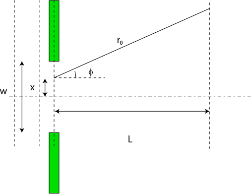

像分布関数 (PSF , Point spread function) について-07
以下のようなモデルを考えます．

各点から発せられる波の結像面での波の大きさは，
\( \Large cos \left[ k \ (r_0 - x sin \phi ) - \omega t + \theta_0 \right] \)
となります．この導出の仕方は，ここ，を参考にしてみてください．
これを，-ｗ/2からw/2まで積分するので，
\( \Large \displaystyle \int_{-\frac{w}{2}}^{ \frac{w}{2} } cos \left[ k \ (r_0 - x sin \phi ) - \omega t + \theta_0 \right] dx \)
すればいいですね．
ここで，関係ない項目をまとめて，
\( \Large R \equiv k r_0 - \omega t + \theta \)
とすれば，
\( \Large \displaystyle \int_{-\frac{w}{2}}^{ \frac{w}{2} } cos \left[ R - k \ sin \ \phi x \right] dx \)
\( \Large \hspace{ 10pt } y\equiv R - k \ sin \ \phi x \)
\( \Large \hspace{ 10pt } dy = - k \ sin \ \phi dx \)
\( \Large \hspace{ 10pt } \begin{pmatrix}
-\frac{w}{2} \hspace{ 10pt }\sim \hspace{ 10pt }x \hspace{ 10pt } \sim \hspace{ 10pt } \frac{w}{2} \\
R + \frac{kw}{2} sin \phi \sim y \sim R - \frac{kw}{2} sin \phi
\end{pmatrix} \)
\( \Large = \displaystyle \int_{R + \frac{kw}{2}}^{ R - \frac{kw}{2} } \frac{1}{-k \ sin \phi }cos y dy \)
\( \Large = \frac{1}{-k \ sin \phi } \left[sin \left( R-\frac{kd}{2} sin \phi \right) -sin \left( R+\frac{kd}{2} sin \phi \right) \right] \)
\( \Large = \frac{1}{k \ sin \phi } 2 \ sin (kw \ sin \phi ) \ cos R \)
\( \Large = \frac{1}{k \ sin \phi } 2 \ sin (kw \ sin \phi ) \ cos (kr_0 -\omega t + \theta) \)
この式の，
\( \Large \frac{2 \ sin (kw \ sin \phi )}{k \ sin \phi } \)
部分が振幅となり，この二乗が強度となりますので，前回導出した波形と同じ形となります．
つまり，
二つの開口部から発せられた波をレンズを通して結像させた場合
一つの開口部から発せられた波
というのは同じ（ような）強度分布になる，と言えますね．
さて，一件落着，と思ったのですが．．．．．
ふと．．．．まだ納得していない点があることに気づきました．．．．
それは，次のページに．．．